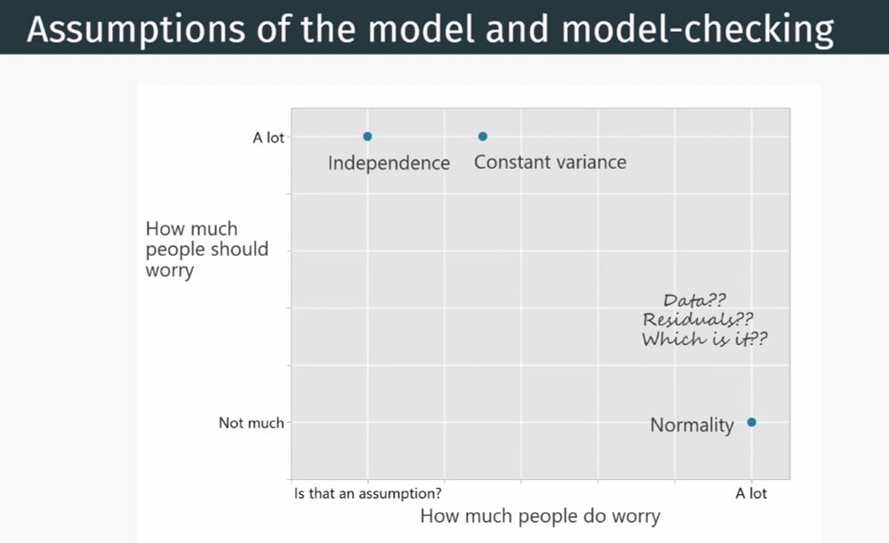

PHS 651: Advanced regression methods
Lecture 0: Introduction
Mary Ryan Baumann, PhD
September 4, 2024
Recording disclosure
This class is being conducted in person, as well as over Zoom. As the instructor, I will be recording this session. I have disabled the recording feature for others so that no one else will be able to record this session. I will be posting this session to the course’s website.
If you have privacy concerns and do not wish to appear in the recording, you may turn video off (click “stop video”) so that Zoom does not record you.
The chat box is always open for discussion and questions to the entire class. You may also send messages privately to the instructor. Please note that Zoom saves all chat transcripts.
Slides found at: https://maryryan.github.io/PHS-651-slides/F25/lec-0/slides-0
Howdy! 🤠
Instructor: Mary Ryan Baumann (she/her)
-
Assistant Professor - Population Health Sciences; Biostatistics & Medical Informatics
Statistician by training; biostatistician by practice
Research in correlated data & study design

Contact
My office: 701 WARF
Email: mary.ryan@wisc.edu
-
Office hours:
In-person: Mondays, 11 - 11:50am
Zoom: Thursdays, noon - 1pm
-
Doodle: https://doodle.com/bp/marybaumann/651-oh
- For scheduling outside meeting time
Howdy! 🤠
Teaching assistant: Eugene Kahng
3rd year Epidemiology PhD student
xxx

Contact
Email: ekahng2@wisc.edu
Office hours: xxx
Outline for today
Course logistics/policies
Overview of course topics/learning objectives
Overview of major assignments
Review of linear regression and notation
Course logistics
Instruction times
Tuesdays/Thursdays 4-5:15p CT
Location: 726 WARF
Most class periods will be in-person instruction dedicated to teaching concepts
-
Approx. every 2 weeks, we’ll have a hands-on “tutorial” class period dedicated to an in-class activity (noted on syllabus)
- During these weeks, you’ll have additional recorded lecture videos to watch
Attendance
I don’t take it
-
All in-person lectures will also have a synchronous Zoom-in option (link on Canvas) & will be recorded
Plan A: attend in person
Plan B: attend synchronously on Zoom
Plan C: watch lecture recording on Canvas
Please don’t make me lecture to an empty room, but know that there’s flexibility if and when you need it
Course logistics
Communications policy 📨
I’ll send an email on Friday evenings with an overview of following week’s activities/topics
-
I’ll be available via email M – F 8a-6p CT
You can expect a response within 24-36 hours, excluding weekends and holidays
I may be checking my email or reply outside of these hours, but that should not be the expectation
-
I have an open-door policy - drop by any time my door is open to discuss class or not-class topics
- But email/schedule if you want to guarantee time (outside OH): https://doodle.com/bp/marybaumann/651-oh
Course logistics
Canvas site: https://canvas.wisc.edu/courses/475593
-
Where you’ll find basically all documents associated with this course
- Syllabus, assignments, readings, lecture recordings, Zoom link, lecture slides, etc
Lecture slides
-
PDF copies of lecture slides found on Canvas
- Clean ones available before class, annotated ones available after class
-
HTML versions (load in web browser) hosted on Github (clean only)
-
I use a generic format for the web address:
https://maryryan.github.io/PHS-651-slides/F25/lec-LectureNumber/slides-LectureNumber- Fill in “LectureNumber” with the lecture/week number for the slide deck you want (e.g., today is lecture 0, next Tuesday we’ll start with lecture 1-1)
-
Learning objectives
Upon successful completion of the course, students will be able to:
Understand the features of correlated data, their role in epidemiologic study, and their implications in drawing inference
State the assumptions underlying linear mixed effect, generalized linear mixed effect, generalized estimating equation, and survival regression models, recognize and address violations of those assumptions, and estimate and interpret regression models to answer epidemiologic and public health research questions in correlated and longitudinal data settings
Implement the inference procedures to solve real-world problems using statistical packages such as SAS and R
Interpret and present the analytic results to answer substantive questions
PHS 552 vs 651
What you covered in PHS 552
What is regression
How to build a mean model
Regression models for different types of outcomes (normal, binary, count, etc)
Assumed constant variance, but also looked at what happens when that assumption breaks
Assumed observations are always independent
What we’ll focus on here:
-
Same foundations, different style
- What happens when observations are not independent
Our focus
We’ve previously assumed all observations are independent
Can be a reasonable assumption in certain settings (certain cross-sectional studies)
-
When not reasonable, methods from PHS 552 can still be useful if other tools aren’t available
- We’ll explore the boundaries of this
Here, we’ll be expanding our statistical toolbox
Allows us to be more precise when independence assumption isn’t reasonable
Lets us ask a wider variety of questions
When might independence not be reasonable?
-
Group membership makes in-group outcome variability different from between-group variability
- i.e., health outcomes correlated by neighborhood, occular outcomes correlated by individual
We’re observing the same individuals repeatedly (longitudinal data)
Our focus
We’ve previously assumed all observations are independent
Can be a reasonable assumption in certain settings (certain cross-sectional studies)
-
When not reasonable, methods from PHS 552 can still be useful if other tools aren’t available
- We’ll explore the boundaries of this
Here, we’ll be expanding our statistical toolbox
Allows us to be more precise when independence assumption isn’t reasonable
Lets us ask a wider variety of questions
Non-independence we won’t be getting into
Time series modeling
Spatial statistical modeling
Course outline
Review of ordinary linear regression, logistic regression weighted least squares
-
Analysis of correlated data
Cross-sectional clustered data
Conditional modeling: linear mixed effect models (LMEs), generalized linear mixed models (GLMMs)
Marginal modeling : generalized estimating equations (GEEs)
-
Analysis of longitudinal data
Modeling repeated measures: longitudinal data, multi-period cross-sectional data (panel data)
Applying LMEs, GLMMS, and GEE to the longitudinal data setting
-
Time-to-event/survival analysis
Kaplan-Meier curves
Cox proportional hazards models
What I’m assuming you’re coming in with
Familiarity with basic statistical inference concepts (i.e., estimation, hypothesis testing, confidence intervals)
Basic regression/ANOVA
(Generally) how to build a mean model (i.e., confounding and precision variables)
-
Some familiarity with matrix notation
Should be familiar with matrix addition/subtraction/multiplication/inversion (just to recognize what’s happening when I show in slides)
We’ll review and I’ll post resources
-
Basic SAS/R coding knowledge
I’ll use both in teaching
My primary software is R
-
You can use whatever software you want for your assignments, just know there are softwares I may be less good at providing support in
- I can give you partial points if I can find where you went wrong in the code, but can’t give partial points if you use software I can’t read
Textbooks/Readings
There’s no single textbook for this course
I’ll be pulling from several books for different topics, as well as stand-alone journal articles
Any time there’s a suggested reading, I’ll put a copy of the corresponding sections in the module
I’ve made the following full e-books available on the Canvas site:
Foundations of Liner and Generalized Linear Models. 2015. Agresti A. John Wiley & Sons. ISBN: 978-1-118-73030-0
Beyond Multiple Linear Regression: Applied Generalized Linear Models and Multilevel Models in R (online textbook)
Applied Longitudinal Analysis. 2011. Fitzmaurice GM, Laird NM, and Ware JH. John Wiley & Sons. ISBN: 9780470380277
Survival Analysis: A Self-Learning Text. 2016. Moore, DF. Springer International Publishing. ISBN: 9783319312439
I’ve also scanned several chapters from books I could not find electronic copies of:
Analysis of Longitudinal Data, 2nd edition. 2002. Diggle PJ, Heagerty P, Liang K, and Zeger SL. Oxford University Press. ISBN: 9780198524847
Data Analysis Using Regression and Multilevel/Hierarchical Models. 2007. Gelman A and Hill J. Cambridge University Press. ISBN: 9780521686891
Applied Survival Analysis Using R. 2012. Kleinbaum DG and Klein M. Springer Science+Business Media. ISBN: 9781441966452
Other resources for you
Canvas Discussions
This is our main forum for questions (threads available for each week, as well as general thread)
It is my expectation that most questions can (and will) be answered by your fellow students
Peer support groups
Randomly assigned groups of 3-4
Guarantees everyone with some continuing level of informal feedback/support/brainstorming through the semester
Feel free to use as study/question groups
How you’ll be evaluated
Homework/small assignments (40%)
Biweekly homeworks assigned at end of class, due on due-date at beginning of class
Some other small assignments to be completed over several weeks
Midterm (15%)
In-class exam focused on understanding of concepts
-
Scheduled for Th 10/09
- If you have scheduling issues with this date, email me ASAP
Final data analysis project (45%)
Intermediate milestone assignments (10% of overall grade)
5-8 minute oral presentation (10%)
Final written report (25%)
Final data analysis project
Semester-long, semi-open-ended data analysis project
Goal: appropriately use any of the knowledge and skills you gain in this class to investigate a research question of your choosing
-
Data
I’ve provided several appropriate datasets/data sources you can choose from
You may also use a dataset you have found, but you must schedule a brief appointment to discuss and have it approved by me
Longitudinal data may be “converted” to cross-sectional data if the appropriate research question is of interest and the analysis uses methods from this course
-
Components
-
Intermediate “milestone” assignments
- Designed to keep you working on the project all semester long and provide you with preliminary feedback
Oral project presentation
Final written report
-
If you want to use this as a chance to test-drive/further your dissertation research, please do!
Note that pretty much any data used for this will require some cleaning – don’t leave this to the last minute!
AI policy
Official stance of this course is that I don’t condone the use of AI tools for assignments
Why?
I want to know how you think, not how an LLM thinks
Validity of responses is not guaranteed
Training data ethics are debatable
This policy follows the guidelines of most academic journals
I don’t use AI detection software
Mostly because it’s bad
Subpar answers will receive subpar grades, regardless of who/what generated it
Before we dive in…
Please complete the pre-course survey before next class! This helps give me an idea of where people are coming from
Homework 0 is due Thurs 9/11 – Primarily review material
Small Assignment 1 is due Tues 9/16 – A (very short) reading and reflection on Canvas
Milestone 1 is due Thurs 9/25 – Start thinking about your final project data set!
Let’s go!
Review: ordinary linear regression
AKA: ordinary least squares
\[Y_i = \beta_0 + \beta_1 U_i + \epsilon_i\]
\(Y_i\): (continuous) outcome/response/dependent variable for some individual \(i\)
\(U_i\): treatment/exposure/independent variable for individual \(i\)
\(\epsilon_i\): error term
\(\beta_0\): model intercept
-
Interpretation:
- \(\beta_1\): model slope
-
Interpretation:
Review: ordinary linear regression
We can write this in matrix notation: \[\vec{Y} = \boldsymbol{X}\vec{\beta} + \vec{\epsilon},\]
where
\(\vec{Y} = \begin{bmatrix} y_1\\ y_2\\ \vdots\\ y_n \end{bmatrix}\) is a (\(n\) x \(1\)) vector of responses
\(\boldsymbol{X} = \begin{bmatrix} 1 & u_1\\ 1 & u_2\\ \vdots & \vdots\\ 1 & u_n \end{bmatrix}\) is the (\(n\) x \(2\)) design matrix
\(\vec{\beta} = \begin{bmatrix} \beta_0\\ \beta_1 \end{bmatrix}\) is a (\(2\) x \(1\)) vector of coefficients
\(\vec{\epsilon} =\begin{bmatrix} \epsilon_1\\ \epsilon_2\\ \vdots\\ \epsilon_n \end{bmatrix}\) a (\(n\) x \(1\)) vector of residuals
Review: ordinary linear regression
We can write this in matrix notation: \[\vec{Y} = \boldsymbol{X}\vec{\beta} + \vec{\epsilon},\]
- \(\boldsymbol{X} = \begin{bmatrix} 1 & u_1\\ 1 & u_2\\ \vdots & \vdots\\ 1 & u_n \end{bmatrix}\) is the design matrix
- \(\vec{\beta} = \begin{bmatrix} \beta_0\\ \beta_1 \end{bmatrix}\) is a vector of coefficients
\(\boldsymbol{X}\vec{\beta}\) is an example of matrix multiplication
- Results in a \(n\)-row by 1 column vector
\[\begin{bmatrix} 1\beta_0 + u_1\beta_1\\ 1\beta_0 + u_2\beta_1\\ \vdots\\ 1\beta_0 + u_n\beta_1 \end{bmatrix}\]
Review: ordinary linear regression
We can write this in matrix notation: \[\vec{Y} = \boldsymbol{X}\vec{\beta} + \vec{\epsilon},\]
\(\boldsymbol{X}\vec{\beta} + \vec{\epsilon}\) is an example of matrix addition
- Results in a \(n\)-row by 1 column vector
\[\begin{bmatrix} (1\beta_0 + u_1\beta_1) + \epsilon_1\\ (1\beta_0 + u_2\beta_1) + \epsilon_2\\ \vdots\\ (1\beta_0 + u_n\beta_1) + \epsilon_n \end{bmatrix}\]
\(\vec{Y}\) and \(\boldsymbol{X}\) are data, while \(\vec{\beta}\) and \(\vec{\epsilon}\) are model parameters
Review: ordinary linear regression
\[\vec{Y} = \boldsymbol{X}\vec{\beta} + \vec{\epsilon}\] We like to think of splitting our model into 2 parts:
- the mean model \[E[\vec{Y}|\boldsymbol{X}] = \boldsymbol{X}\vec{\beta}\] \[E[Y_i|U_i] = \beta_0 + \beta_1U_i\]
- the model of the covariance \[Cov[\vec{Y}|\boldsymbol{X}] = \boldsymbol{\Sigma}\]
-
In OLS we usually assume:
The specified mean model is correct
The errors are Normally distributed \(\vec{\epsilon} \sim N(0, \sigma^2)\)
The errors have a constant variance across all levels of \(\boldsymbol{X}\) (homoskedasticity assumption)
And that observations are completely independent (covariance of 0)
Quick aside
Borrowed via: https://bsky.app/profile/cameronpat.bsky.social/post/3lwn5ireyes2w
Review: ordinary linear regression
- the model of the covariance \[Cov[\vec{Y}|\boldsymbol{X}] = \boldsymbol{\Sigma}\]
-
In OLS we usually assume:
The specified mean model is correct
The errors are Normally distributed \(\vec{\epsilon} \sim N(0, \sigma^2)\)
The errors have a constant variance across all levels of \(\boldsymbol{X}\) (homoskedasticity assumption)
And that observations are completely independent (covariance of 0)
So in OLS, \(\boldsymbol{\Sigma}\) ends up being assumed to look like:
\[\boldsymbol{\Sigma} = \begin{bmatrix}\sigma^2 & 0 & \dots & 0 \\ 0 & \ddots & \dots & 0 \\ \vdots & \dots & \ddots & \vdots\\ 0 & \dots & 0 & \sigma^2\end{bmatrix}\]
Review: OLS estimation
Model parameters are the “true” relationship between our independent variables and our response (given how we’re modeling the relationship…)
- We try to estimate what that particular relationship might be using data
We can get a point estimate for \(\beta\) using the data: \[\widehat{\boldsymbol{\beta}} = (\boldsymbol{X}^T\boldsymbol{X})^{-1}\boldsymbol{X}^T\vec{Y}\]
- This is our single best guess for what \(\beta\) is 🎯
\(\boldsymbol{X}^T\) is an example of transposing a matrix
It turns a \(n\) x 2 matrix \[\boldsymbol{X} = \begin{bmatrix} 1 & u_1\\ 1 & u_2\\ \vdots & \vdots\\ 1 & u_n \end{bmatrix}\]
into a 2 x \(n\) matrix \[\boldsymbol{X}^T = \begin{bmatrix} 1 & 1 & \dots & 1\\ u_n & u_2 & \dots & u_n \end{bmatrix}\]
Review: OLS estimation
Model parameters are the “true” relationship between our independent variables and our response (given how we’re modeling the relationship…)
- We try to estimate what that particular relationship might be using data
We can get a point estimate for \(\beta\) using the data: \[\widehat{\boldsymbol{\beta}} = (\boldsymbol{X}^T\boldsymbol{X})^{-1}\boldsymbol{X}^T\vec{Y}\]
- This is our single best guess for what \(\beta\) is 🎯
\((\boldsymbol{X}^T\boldsymbol{X})^{-1}\) is an example of matrix inversion
- Think of it like you’re dividing \(\boldsymbol{X}^T\vec{Y}\) by \((\boldsymbol{X}^T\boldsymbol{X})\): \(\frac{\boldsymbol{X}^T\vec{Y}}{(\boldsymbol{X}^T\boldsymbol{X})}\)
Review: OLS inference
Because our data is only a sample from the entire population of interest, we always have uncertainty in that estimate… We need to incorporate varaince of our parameter to quantify that uncertainty
- The covariance matrix for \(\widehat{\beta}\) is \[V = \sigma^2(\boldsymbol{X}^T\boldsymbol{X})^{-1}\]
which we estimate with \[\widehat{V} = \widehat{\sigma}^2(\boldsymbol{X}^T\boldsymbol{X})^{-1}\]
- We assume our estimate \(\widehat{\beta}\) has a distribution: \[\widehat{\beta} \sim N(\beta, V)\]
- Then we can create a \((100-\alpha/2)\)% confidence interval for \(\widehat{\beta}\): \[\widehat{\beta} \pm Z_{1-\alpha/2}\sqrt{\widehat{V}}\]
-
We call this statistical inference
It’s a way of providing context for our point estimate
If a confidence interval is wide it tells us there’s a lot of variation around our point estimate
if a confidence interval is narrow it tells us our there’s little variation around our point estimate
Review: simple slopes
What if we want to compare subgroups that involve a combination of covariates?
We call these simple slopes or linear contrasts
Let’s say we want to compare a group that has \(U=X=Z=0\) to a group that has \(U=X=1\)
\[Y_i = \beta_0 + U_i\beta_1 + X_i\beta_2 + Z_i\beta_3 + \epsilon_i\]
Finding the estimate for this is relatively easy
Just combine the estimates of the individual regression parameters: \((\hat{\beta}_1 + \hat{\beta}_2)\)
Could also do this in a linear algebra way: \[\begin{align*} &L=(0,1,1,0)\\ &L \hat{\vec{\beta}} = (0,1,1,0) \begin{pmatrix}\hat{\beta}_0\\ \hat{\beta}_1\\ \hat{\beta}_2\\ \hat{\beta}_3\\\end{pmatrix} = (\hat{\beta}_1 + \hat{\beta}_2) \end{align*}\]
Review: simple slopes
\[Y_i = \beta_0 + U_i\beta_1 + X_i\beta_2 + Z_i\beta_3 + \epsilon_i\]
However, we can’t just add up the SE estimates to get the subgroup SE
We have to incorporate the covariance between the parameters
Easiest way to do this is with linear algebra:
\[\begin{align*}SE &= \sqrt{\left(LCov[\hat{\beta}]L^T\right)}\\ &= \sqrt{\sigma^2_{b1} + \sigma^2_{b2} + 2cov(\hat{\beta}_1, \hat{\beta}_2)}\end{align*}\]
This means a \((1-\alpha)\times100\)% model-based confidence interval for \((\hat{\beta}_1 + \hat{\beta}_3)\) is: \[(\hat{\beta}_1 + \hat{\beta}_2) \pm \sqrt{\left(LCov[\hat{\beta}]L^T\right)} \times Z_{1-\alpha/2}\]
Review: robust variance
What happens when \(Var[\vec{Y}|\boldsymbol{X}]\) is NOT the same across all observations? What if it varies by \(u_i\)?
- This is different than assuming observations are not independent
- Estimate of \(\beta\) will be fine, but inference (AKA standard errors) will be incorrect
- Under the equal variance assumption, we have: \[\begin{align*}Var[\widehat{\beta}] &= (\boldsymbol{X}^T\boldsymbol{X})^{-1}\boldsymbol{X}^T\{Var[\vec{Y}|\boldsymbol{X}]\}\boldsymbol{X}(\boldsymbol{X}^T\boldsymbol{X})^{-1}\\ &=(\boldsymbol{X}^T\boldsymbol{X})^{-1}\boldsymbol{X}^T\{\sigma^2\boldsymbol{I}\}\boldsymbol{X}(\boldsymbol{X}^T\boldsymbol{X})^{-1}\\ &=\sigma^2(\boldsymbol{X}^T\boldsymbol{X})^{-1}\end{align*}\]
- If we know \(Var[\vec{Y}|\boldsymbol{X}] \ne \sigma^2\boldsymbol{I}\), then obviously \(Var[\widehat{\beta}] \ne \sigma^2(\boldsymbol{X}^T\boldsymbol{X})^{-1}\)
Review: robust variance
If we know \(Var[\vec{Y}|\boldsymbol{X}] \ne \sigma^2\boldsymbol{I}\), then obviously \(Var[\widehat{\beta}] \ne \sigma^2(\boldsymbol{X}^T\boldsymbol{X})^{-1}\)
- Then what to we assume for \(Var[\vec{Y}|\boldsymbol{X}]\)?
- What if instead of making assumptions (except for independence), we estimate the residual for each observation \(i\) (\(\widehat{\epsilon}_i\)) and use \(Var[Y_i|\vec{X}_i] = \widehat{\epsilon}_i\widehat{\epsilon}_i\)?
- We then get \[\begin{align*}Var[\widehat{\beta}] &= (\boldsymbol{X}^T\boldsymbol{X})^{-1}\boldsymbol{X}^T\{Var[\vec{Y}|\boldsymbol{X}]\}\boldsymbol{X}(\boldsymbol{X}^T\boldsymbol{X})^{-1}\\ &=(\boldsymbol{X}^T\boldsymbol{X})^{-1}\boldsymbol{X}^T\{\widehat{\vec{\epsilon}}\widehat{\vec{\epsilon}}^T\}\boldsymbol{X}(\boldsymbol{X}^T\boldsymbol{X})^{-1}\end{align*}\]
- We call this the robust or sandwich variance
Review: weighted least squares
The robust variance will fix the problem, but it’s not statistically efficient
E.g., Not the best use of data to estimate the variance for each observation
Doing so increases the available degrees of freedom that we use \(\Rightarrow\) this can be a problem when we have a finite sample size
An alternative strategy is to use weighted least squares (WLS)
Review: weighted least squares
An alternative strategy is to use weighted least squares (WLS)
\[\widehat{\boldsymbol{\beta}} = (\boldsymbol{X}^T\boldsymbol{W}\boldsymbol{X})^{-1}\boldsymbol{X}^T\boldsymbol{W}\vec{Y}\]
- \(\boldsymbol{W}\) is a diagonal matrix of weights
\[\begin{bmatrix} w_1 & 0 & \dots & 0\\ 0 & w_2 & \dots & 0\\ \vdots& &\ddots &\vdots\\ 0 & 0 & \dots & w_n\\ \end{bmatrix}\]
-
Incorporating the weighting matrix is a little like applying a linear transformation
- This transformation changes the regression equation to one with equal variance
The variance of \(\widehat{\beta}\) would then be \[Var[\widehat{\beta}] = (\boldsymbol{X}^T\boldsymbol{W}\boldsymbol{X})^{-1}\boldsymbol{X}^T\boldsymbol{W}\{Var[\vec{Y}|\boldsymbol{X}]\}\boldsymbol{W}\boldsymbol{X}^T(\boldsymbol{X}^T\boldsymbol{W}\boldsymbol{X})^{-1}\]
Review: weighted least squares
But what do we use for \(\boldsymbol{W}\)?
- If we knew \(Var[Y_i|\vec{X}_i]\), we’d use some \(w_i\) such that \[w_i^2 \times Var[Y_i|\vec{X}_i] = w_i^2 \sigma^2_i = w_i^2 \frac{\sigma^2}{w_i^2} = \sigma^2\] The variance of \(\widehat{\beta}\) would then be
\[\begin{align*}Var[\widehat{\beta}] &= (\boldsymbol{X}^T\boldsymbol{W}\boldsymbol{X})^{-1}\boldsymbol{X}^T\boldsymbol{W}\{Var[\vec{Y}|\boldsymbol{X}]\}\boldsymbol{W}\boldsymbol{X}^T(\boldsymbol{X}^T\boldsymbol{W}\boldsymbol{X})^{-1}\\ &=(\boldsymbol{X}^T\boldsymbol{W}\boldsymbol{X})^{-1}\boldsymbol{X}^T\boldsymbol{W}\sigma^2\boldsymbol{W}^{-1}\boldsymbol{W}\boldsymbol{X}^T(\boldsymbol{X}^T\boldsymbol{W}\boldsymbol{X})^{-1}\\ &=\sigma^2(\boldsymbol{X}^T\boldsymbol{W}\boldsymbol{X})^{-1}\end{align*}\]
Review: weighted least squares
There are some cases where we know \(Var[Y_i|\vec{X}_i]\) or know what weights \(\boldsymbol{W}\) we should use
- E.g., If \(y_i\) is the average of \(n_i\) equally-variable observations, then \(Var[Y_i|\vec{X}_i] = \sigma^2/n_i\) and \(w_i = n_i\)
But often times we don’t know
- Could use \(\widehat{\epsilon}_i^2\):
\[(\boldsymbol{X}^T\boldsymbol{W}\boldsymbol{X})^{-1}\boldsymbol{X}^T\boldsymbol{W}\widehat{\vec{\epsilon}}\widehat{\vec{\epsilon}}^T\boldsymbol{W}\boldsymbol{X}(\boldsymbol{X}^T\boldsymbol{W}\boldsymbol{X})^{-1}\]
- In this case, \(w_i = \frac{1}{\widehat{\epsilon}_i^2}\)
-
In 552, we assumed \(Cov[\vec{Y}|\boldsymbol{X}]=\boldsymbol{\Sigma}\) was a diagonal matrix (because assume 0 covariance)
So above, we assume \(\hat{\Sigma}=\widehat{\vec{\epsilon}}\widehat{\vec{\epsilon}}^T\) is diagonal
We’ll break that assumption in this class